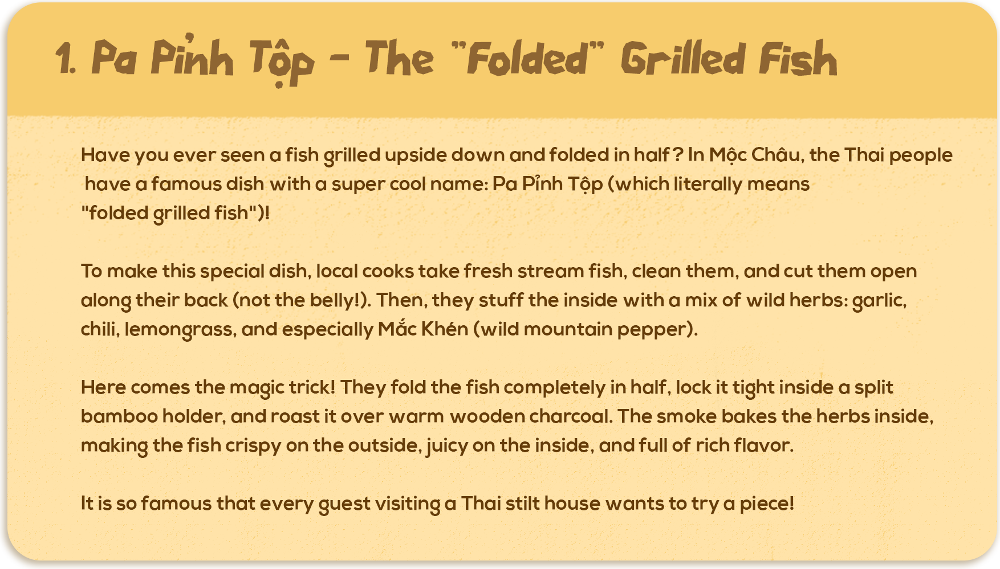

1. Pa Pỉnh Tộp – The “Folded” Grilled Fish
Have you ever seen a fish grilled upside down and folded in half? In Mộc Châu, the Thai people have a famous dish with a super cool name: Pa Pỉnh Tộp (which literally means “folded grilled fish”)!
To make this special dish, local cooks take fresh stream fish, clean them, and cut them open along their back (not the belly!). Then, they stuff the inside with a mix of wild herbs: garlic, chili, lemongrass, and especially Mắc Khén (wild mountain pepper).
Here comes the magic trick! They fold the fish completely in half, lock it tight inside a split bamboo holder, and roast it over warm wooden charcoal. The smoke bakes the herbs inside, making the fish crispy on the outside, juicy on the inside, and full of rich flavor.
It is so famous that every guest visiting a Thai stilt house wants to try a piece!